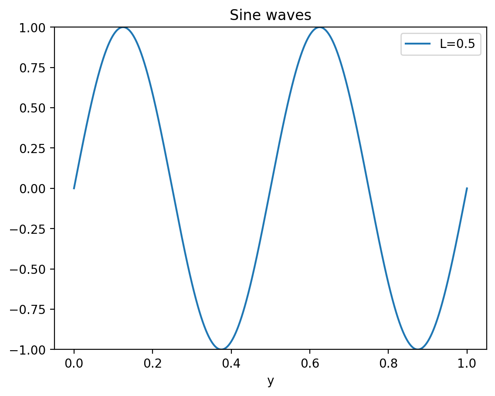

DEMO: Visualizing waves#
#@title Import libs
import numpy as np
import matplotlib.pyplot as plt
import ipywidgets
from ipywidgets import interact, interactive, Dropdown
from matplotlib.animation import FuncAnimation
from IPython.display import HTML
import plotly.graph_objects as go
from plotly.subplots import make_subplots
%matplotlib inline
%config InlineBackend.figure_format='retina'
try:
from google.colab import output
output.enable_custom_widget_manager()
print('All good to go')
except:
print('Okay we are not in Colab just proceed as if nothing happened')
Okay we are not in Colab just proceed as if nothing happened
Standing and traveling waves in 1D#
We begin by plotting a simple periodic function using numpy and matplotlib
\[y = \sin(kx)=\sin\left(\frac{2\pi}{\lambda} x\right)\]
Here are the main steps:
Generate grid of points for x (lets say 1000 equiditant points between 0 and 1)
Calcualte y values on this grid points
Plot y vs x
# Generate 1000 points between 0 and 1 for the x-axis
x = np.linspace(0.0, 1.0, 1000)
# Calculate the y-values based on the sine wave formula
y = np.sin(2 * np.pi * x / L)
# Create the plot
plt.plot(x, y, label=f'L = {L}')
---------------------------------------------------------------------------
NameError Traceback (most recent call last)
Cell In[2], line 5
2 x = np.linspace(0.0, 1.0, 1000)
4 # Calculate the y-values based on the sine wave formula
----> 5 y = np.sin(2 * np.pi * x / L)
7 # Create the plot
8 plt.plot(x, y, label=f'L = {L}')
NameError: name 'L' is not defined
Now lets package this into a nice little function so we can reuse it in animations!#
def wave1d(L=2):
"""
Plots a 1D sine wave with a specified wavelength.
Parameters:
L (float): Wavelength of the sine wave. Default is 2 units.
The function generates a sine wave of the form y = sin(2πx / L) and
plots it over the domain x = [0, 1]. The plot includes labeled axes,
a title, and a legend showing the value of L (wavelength).
"""
# Generate 1000 points between 0 and 1 for the x-axis
x = np.linspace(0.0, 1.0, 1000)
# Calculate the y-values based on the sine wave formula
y = np.sin(2 * np.pi * x / L)
# Create the plot
plt.plot(x, y, label=f'L = {L}')
# Label the axes
plt.xlabel('x (position)')
plt.ylabel('y (amplitude)')
# Add a title and legend
plt.title('1D Sine Wave')
plt.legend()
# Set limits for the y-axis to improve clarity
plt.ylim(-1, 1)
# Display the plot
plt.show()
# Change wavelength
wave1d(L=0.5)

Making wave functions interactive#
By adding
@widgets.interact(parameters=(init,final))to our functions we can interactively parameters in the function using slider widgets.
interactive(wave1d, L=(0.1, 2))
Traveling, standing waves and wave interference#
The function generates two waves,
wave1andwave2, and their superposition.The waves are of the form \(y = sin(k(x - vt))\) and \(y = sin(k(x - vt) + \phi)\).
where \(\phi\) is the phase shift between the two. All three waveforms are plotted on the same graph.
def wavef2(k=10, t=0, phi=0, v=1):
"""
Plots two traveling waves and their superposition.
Parameters:
k (float): Wave number (related to wavelength). Default is 10.
t (float): Time at which to evaluate the wave. Default is 0.
phi (float): Phase shift between the two waves. Default is 0.
v (float): Velocity of the waves. Positive velocity moves the wave to the right.
Try flipping the direction of velocity (negative v) to observe standing waves.
"""
# Create 1000 points between 0 and 1 for the x-axis
x = np.linspace(0, 1., 1000)
# Define the first traveling wave
wave1 = np.sin(k * (x - v * t))
# Define the second traveling wave with a phase shift
wave2 = np.sin(k * (x - v * t) + phi) # Flip v to observe a standing wave effect
# Plot the two individual waves and their superposition
plt.plot(x, wave1, lw=2, color='blue', label='Wave 1')
plt.plot(x, wave2, lw=2, color='green', label='Wave 2')
plt.plot(x, wave1 + wave2, lw=3, color='red', label='Wave 1 + Wave 2')
# Set limits for the y-axis
plt.ylim([-2.5, 2.5])
# Add a legend and grid for clarity
plt.legend()
plt.grid(True)
# Display the plot
plt.show()
interactive(wavef2, k=(2, 20), t=(0,50.0,0.1), phi=(0, 2*np.pi, np.pi/8),v=1)
#@title Animate traveling wave in 3D
def wave_x_t(A=1, k=1.0, omega=1, phi=0):
# Create a grid of x and t values
x = np.linspace(0, 2 * np.pi, 100)
t = np.linspace(0, 2 * np.pi, 100)
X, T = np.meshgrid(x, t)
# Calculate the wave amplitude for each combination of x and t
Y = A * np.sin(k * X - omega * T + phi)
# Create the figure
fig = go.Figure(
data=[go.Surface(z=Y, x=X, y=T, colorscale='Viridis')],
layout=go.Layout(
title='Traveling Wave Animation',
scene=dict(
xaxis_title='Position',
yaxis_title='Time',
zaxis_title='Amplitude',
camera_eye=dict(x=1.5, y=1.5, z=1.5),
),
width=800,
height=800,
updatemenus=[dict(type='buttons', showactive=False,
buttons=[dict(label='Play',
method='animate',
args=[None, dict(frame=dict(duration=50, redraw=True),
mode='immediate')])])]
)
)
# Generate frames for the animation
frames = []
for phi in np.linspace(0, 2 * np.pi, 100):
Y = A * np.sin(k * X - omega * T + phi)
frames.append(go.Frame(data=[go.Surface(z=Y, x=X, y=T)], name=str(phi)))
fig.frames = frames
return fig
# Generate and show the animation
fig = wave_x_t(A=1, k=1.0, omega=1, phi=0)
fig.show()
Normal modes of 1D guitar string#
def guitar1d(n=1, t=0):
"""
Visualizes the 1D normal mode of a vibrating guitar string at a specific time.
Parameters:
n (int): Mode number (harmonic) of the vibrating string. Default is 1.
t (float): Time at which to evaluate the normal mode. Default is 0.
The function plots the displacement of the string at time t based on the
normal mode solution y(x, t) = sin(n * pi * x / L) * cos(omega * t), where
L is the length of the string (default is 1) and omega is the angular frequency.
"""
# Constants
v = 1 # Wave speed
L = 1 # Length of the string
omega = np.pi * v / L # Angular frequency for the fundamental mode (n=1)
# Spatial grid from 0 to L
x = np.linspace(0, L, 1000)
# Compute the displacement of the string for mode n and time t
y = np.sin(n * np.pi * x / L) * np.cos(omega * t)
# Plot the displacement of the string
plt.plot(x, y, lw=3)
# Add title, grid, and axis limits
plt.title(f'Normal Mode #{n} of a 1D Guitar String')
plt.grid(True, linestyle='--')
plt.ylim(-1, 1)
# Label the axes
plt.xlabel('Position along string (x)')
plt.ylabel('Displacement (y)')
# Display the plot
plt.show()
interactive(guitar1d, n=(1,10), t=(0, 10, 0.1))
1D guitar vibrations as linear combination of normal modes#
\[u(x,t) = c_1 u_1 + c_2 u_2 +c_3 u_3 + ...\]
\(u_n = sin(n \pi x / L) \cdot cos(n \pi v t / L)\), normal modes
\(c_n=0-1\) coeficients of modes
#@title Animate mode combinations
def create_animation(modes, coefficients):
# Parameters
v = 1 # wave speed
L = 1 # length of the string
# Set up the figure and axis
fig, ax = plt.subplots(figsize=(10, 5))
x = np.linspace(0, L, 500) # Reduce resolution to 500 points
line, = ax.plot(x, np.zeros_like(x), lw=3)
ax.set_ylim(-1.5, 1.5)
# Update title to include selected modes
modes_str = ', '.join(map(str, modes))
ax.set_title(f"Combination of Normal Modes: {modes_str}")
ax.set_xlabel("Position along the string (x)")
ax.set_ylabel("Displacement (y)")
ax.grid('--')
# Animation function
def update(frame):
t = frame / 10 # Adjust time scaling
y = sum(c * np.sin(n * np.pi * x / L) * np.cos(n * np.pi * v * t / L)
for n, c in zip(modes, coefficients))
line.set_ydata(y)
return line,
# Create the animation
ani = FuncAnimation(fig, update, frames=np.arange(0, 50), interval=100, blit=True) # Reduced to 50 frames
plt.close(fig) # Prevents static display of the last frame
return HTML(ani.to_jshtml())
modes = [1, 2, 3] # Change mode numbers (from 1 to 10)
coefficients = [1, 1, 1] # Change their coefficients (from 0-1)
create_animation(modes, coefficients)
Normal modes of a 2D membrane#
def membrane2d_mode(n=1, m=1, t=0):
"""
Calculates the 2D grid of points (X, Y) and the normal mode displacement (Z) of a vibrating
rectangular membrane at a specific time t.
Parameters:
n (int): Mode number along the x-direction. Default is 1.
m (int): Mode number along the y-direction. Default is 1.
t (float): Time at which to evaluate the normal mode. Default is 0.
Returns:
X, Y, Z (numpy arrays): Grid of points in the X-Y plane and the corresponding
membrane displacement Z(X, Y, t).
"""
# Constants
Lx, Ly = 1.0, 1.0 # Dimensions of the rectangular region
v = 0.1 # Wave speed
omega = v * np.pi / Lx * (n**2 + m**2) # Angular frequency for the normal mode
# Create a spatial grid
Nx, Ny = 100, 100 # Number of grid points in each dimension
x, y = np.linspace(0, Lx, Nx), np.linspace(0, Ly, Ny)
X, Y = np.meshgrid(x, y)
# Compute the spatial part of the normal mode
Z = np.sin(m * np.pi * X / Lx) * np.sin(n * np.pi * Y / Ly) * np.cos(omega * t)
return X, Y, Z
def viz_membrane2d_plotly(n=1, m=1, t=0):
"""
Visualizes the 2D normal modes of a vibrating membrane on a square geometry using Plotly.
This function displays both a 2D contour plot and a 3D surface plot of the membrane displacement.
Parameters:
n (int): Mode number along the x-direction. Default is 1.
m (int): Mode number along the y-direction. Default is 1.
t (float): Time at which to evaluate the normal mode. Default is 0.
"""
# Get the membrane displacement at time t
X, Y, Z = membrane2d_mode(n, m, t)
# Create a Plotly subplot with 2 views: 2D contour and 3D surface
fig = make_subplots(
rows=1,
cols=2,
subplot_titles=('2D Contour Plot', '3D Surface Plot'),
specs=[[{"type": "contour"}, {"type": "surface"}]]
)
# Add 2D contour plot to the left side
fig.add_trace(
go.Contour(x=X.flatten(), y=Y.flatten(), z=Z.flatten(), colorscale='RdBu'),
row=1, col=1
)
# Add 3D surface plot to the right side
fig.add_trace(
go.Surface(x=X, y=Y, z=Z, colorscale='RdBu'),
row=1, col=2
)
# Update the layout for better visualization
fig.update_layout(
title_text="2D Contour and 3D Surface Plots of Membrane Vibrational Normal Modes",
width=1000,
height=500
)
# Show the figure
fig.show()
interact(viz_membrane2d_plotly, n=(1,10), m=(1,10), t=(0,100))
<function __main__.viz_membrane2d_plotly(n=1, m=1, t=0)>